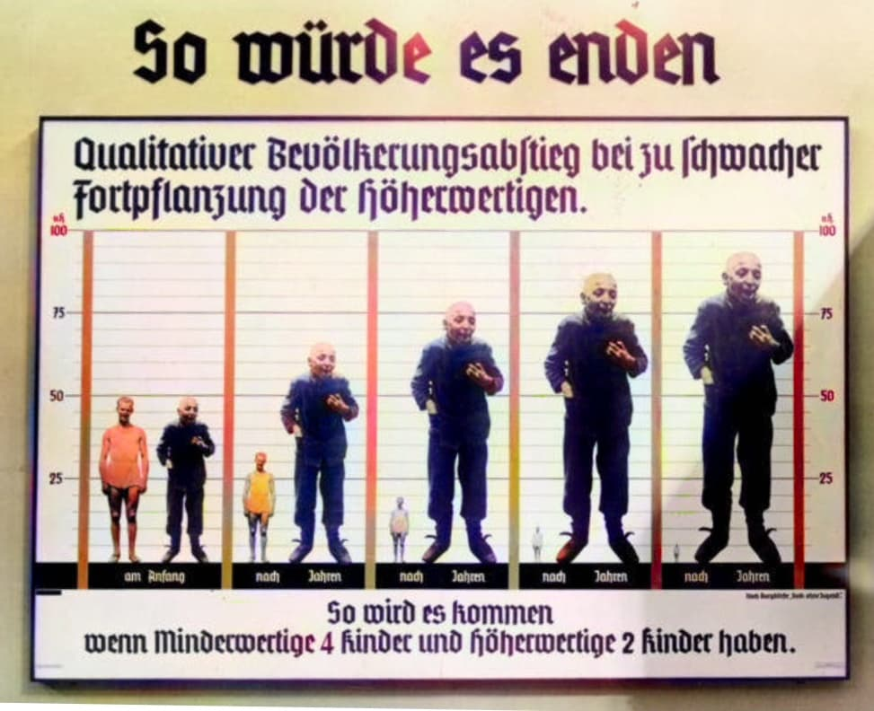
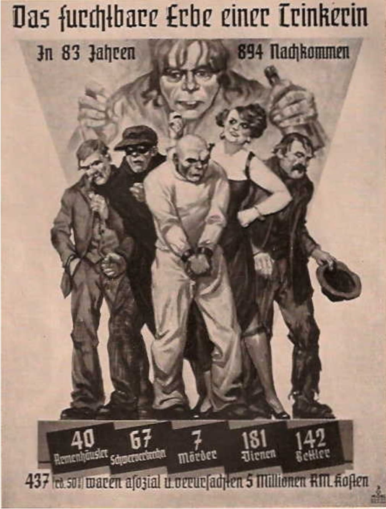

Introduction
Le programme Aktion T4 est lancé par le régime nazi en 1939. Il vise les personnes considérées comme « incurables », « handicapées » ou « inutiles à la communauté ». Il s’agit du premier système d’extermination organisé par le IIIe Reich.
Cette fiche adopte une approche muséale, neutre et respectueuse : elle explique les mécanismes, les responsables et les lieux, sans montrer les victimes ni des images choquantes.

L’ordre signé par Hitler
Ce document, signé et antidaté au 1er septembre 1939, autorise personnellement le lancement du programme Aktion T4. Hitler donne à Karl Brandt, son médecin, et à Philipp Bouhler, chef de la chancellerie privée, le pouvoir d’étendre les prérogatives de certains médecins afin de décider, selon une évaluation jugée « rigoureuse », d’accorder une « mort miséricordieuse » aux personnes considérées comme incurables.
Ce texte n’est ni une loi ni un décret officiel : il s’agit d’une instruction extrajudiciaire, volontairement secrète, qui fonde administrativement le programme d’euthanasie forcée du régime nazi. Le document illustre la bureaucratie du crime : une décision écrite, datée, signée, transmise aux médecins pour légitimer l’action.
Origine du nom « T4 »
Le nom T4 vient de l’adresse du bureau central du programme : Tiergartenstraße 4, à Berlin. C’est depuis ce bâtiment que sont coordonnés les formulaires, les évaluations, les transferts et les décisions de mise à mort.
Fonctionnement du programme
Le programme repose sur une machine administrative : formulaires envoyés aux hôpitaux, évaluations médicales, commissions secrètes, transferts vers des centres spécialisés, mise à mort par gaz, injection ou privation. Les principaux centres sont Grafeneck, Hartheim, Hadamar, Bernburg, Sonnenstein et Brandenburg.
Aktion T4 s’inscrit dans une logique d’hygiène raciale, d’eugénisme et d’utilité économique : « purifier » la population allemande et réduire les coûts jugés inutiles pour l’État.

Propagande eugéniste et hygiène raciale
Le régime nazi diffuse de nombreuses affiches de propagande eugéniste pour convaincre la population que la « qualité » du peuple allemand dépendait de la reproduction des individus jugés « supérieurs » et de la réduction des naissances chez ceux considérés comme « inférieurs ».
Ce type de document, présenté comme scientifique, illustre la logique d’hygiène raciale et d’eugénisme qui sert de base idéologique au programme Aktion T4. Il prépare l’opinion à accepter les politiques de stérilisation forcée, d’exclusion et, finalement, d’euthanasie des personnes jugées « inutiles » ou « incurables ».
L’affiche montre comment la propagande simplifie et manipule des concepts pseudo‑scientifiques pour légitimer la bureaucratie du crime mise en place par le régime nazi.

Propagande eugéniste : l’hérédité et la « dégénérescence »
Le régime nazi utilise également des affiches comme « Das furchtbare Erbe einer Trinkerin » (« L’horrible héritage d’une femme alcoolique ») pour diffuser des idées pseudo‑scientifiques sur l’hérédité et la prétendue « dégénérescence » des familles jugées asociales ou inférieures.
Ce document présente une femme entourée de descendants représentés de manière caricaturale, accompagnés de statistiques inventées visant à prouver que certaines familles produiraient davantage de criminels, de personnes handicapées ou de « parasites sociaux ». Ce type de propagande cherche à légitimer les politiques de stérilisation forcée et d’euthanasie menées dans le cadre d’Aktion T4.
L’affiche illustre comment les nazis manipulent des données prétendument scientifiques pour justifier l’intervention de l’État dans la reproduction humaine, et pour préparer l’opinion à accepter la bureaucratie du crime qui conduit à la mise à mort de milliers de personnes jugées « inutiles » ou « incurables ».
Victimes et bilan
Les historiens estiment qu’environ 70 000 personnes sont tuées entre 1939 et 1941, durant la phase officielle du programme. En incluant les prolongements clandestins jusqu’en 1945, le bilan total atteint près de 200 000 victimes.
Aktion T4 constitue un prélude direct aux méthodes utilisées plus tard dans les camps d’extermination : sélection, transport, mise à mort industrialisée.
Fin officielle et poursuite clandestine
Le programme est officiellement arrêté en août 1941 après des protestations, notamment celles du cardinal von Galen. Cependant, les meurtres continuent de manière plus discrète : injections, privations et décisions locales dans les hôpitaux et institutions.
Importance historique
Aktion T4 est essentiel pour comprendre la radicalisation progressive du régime nazi. Il montre comment une décision administrative peut devenir un instrument d’extermination. Le programme prépare les méthodes, les équipes et les structures qui seront utilisées plus tard dans la Solution finale.